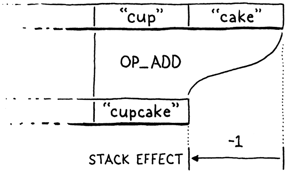

全局变量
要是有一种发明可以封存记忆就好了，比如气味。它永远不会褪色，也永远不会陈旧。然后，当有人想要它的时候，可以打开瓶子的塞子，这就像重新体验那一刻一样。
-- Daphne du Maurier,?Rebecca
上一章是对一个庞大、深入、基础的计算机科学数据结构的长期探索。重理论和概念。可能有一些关于大 O 符号和算法的讨论。本章的学术理论较少。没有大的想法可以学习。相反，它是一些简单的工程任务。一旦完成它们，我们的虚拟机将支持变量。
实际上，它只支持全局变量。局部变量将在下一章到来。在 jlox 中，我们设法将它们都塞进了一个章节中，因为我们对所有变量使用了相同的实现技术。我们构建了一系列环境，每个作用域一个，一直到顶部。这是一种学习如何管理状态的简单、干净的方法。
但它也很慢。每次输入一个块或调用一个函数时分配一个新的哈希表并不是通往快速 VM 的道路。鉴于有多少代码与使用变量有关，如果变量变慢，一切都会变慢。对于 clox，我们将通过对局部变量使用更有效的策略来改进它，但全局变量并不那么容易优化。
这是复杂语言实现中的常见元策略。通常，相同的语言特性会有多种实现技术，每种技术都针对不同的使用模式进行了调整。例如，JavaScript 虚拟机通常可以更快地表示更像类实例的对象，而其他对象的属性集可以更自由地修改。C 和 C++ 编译器通常有多种方法来根据 case 的数量和 case 值的密集程度来编译
switch语句。
快速回顾一下 Lox 语义：Lox 中的全局变量是“后期绑定”的，或者说是动态解析的。这意味着您可以在定义全局变量之前编译一段引用全局变量的代码。只要代码不在定义发生之前执行，一切都很好。实际上，这意味着您可以在函数体内引用后面的变量。
fun showVariable() {
print global;
}
var global = "after";
showVariable();
像这样的代码可能看起来很奇怪，但它对于定义相互递归函数很方便。它还可以更好地与 REPL 配合使用。您可以在一行中编写一个小函数，然后定义它在下一行中使用的变量。
局部变量的工作方式不同。由于局部变量的声明总是在使用之前发生，因此 VM 可以在编译时解析它们，即使在简单的单遍编译器中也是如此。这将使我们能够为局部变量使用更智能的表示。但那是下一章的事了。现在，让我们只担心全局变量。
21.1 语句 statements
变量是使用变量声明产生的，这意味着现在也是时候为编译器添加对语句的支持了。如果您还记得的话，Lox 将语句分为两类。“声明语句”是将新名称绑定到值的那些语句。其他类型的语句——控制流、打印等——简称为“语句”。我们不允许直接在控制流语句使用声明语句，如下所示：
if (monday) var croissant = "yes"; // Error.
允许它会引发周围变量范围的令人困惑的问题。因此，与其他语言一样，我们通过为控制流主体内允许的语句子集设置单独的语法规则来在语法上禁止它。
statement → exprStmt
| forStmt
| ifStmt
| printStmt
| returnStmt
| whileStmt
| block ;
然后我们在脚本的顶层和块内使用单独的规则。
declaration → classDecl
| funDecl
| varDecl
| statement ;
该declaration规则包含声明名称的语句，还包括statement允许所有语句类型。由于block 在 statement中，您可以通过将声明嵌套在块中来将声明放入控制流构造中。
块的作用有点像括号对表达式的作用。块允许您将“低优先级”声明语句放在只允许“高优先级”非声明语句的地方。
在本章中，我们将只介绍几个语句和一个声明。
statement → exprStmt
| printStmt ;
declaration → varDecl
| statement ;
到目前为止，我们的 VM 将“程序”视为单个表达式，因为这是我们可以解析和编译的全部内容。在完整的 Lox 实现中，程序是一系列声明。我们现在准备支持它。
advance();
while (!match(TOKEN_EOF)) {
declaration();
}
endCompiler();
// compiler.c, in compile(), replace 2 lines
我们一直在编译声明(declaration)，直到到达源文件的末尾。我们使用这个编译一个声明：
static void declaration() {
statement();
}
// compiler.c, add after expression()
我们将在本章后面介绍变量声明，所以现在，我们只是转到statement().
static void statement() {
if (match(TOKEN_PRINT)) {
printStatement();
}
}
// compiler.c, add after declaration()
块可以包含声明，控制流语句可以包含其他语句。这意味着这两个函数最终将是递归的。我们现在不妨写出前向声明。
static void expression();
static void statement();
static void declaration();
static ParseRule* getRule(TokenType type);
// compiler.c, add after expression()
21.1.1 打印语句 print statements
在本章中两种语句类型需要支持。让我们从print语句开始，很自然地，语句以printtoken开头。我们使用这个辅助函数检测：
static bool match(TokenType type) {
if (!check(type)) return false;
advance();
return true;
}
// compiler.c, add after consume()
您可能会从 jlox 中认出它。如果当前token具有给定类型，我们使用token并返回true。否则我们不理会token并返回false。这个辅助函数是根据另一个辅助函数实现的：
一路下来都是辅组函数！
static bool check(TokenType type) {
return parser.current.type == type;
}
// compiler.c, add after consume()
如果当前token具有给定类型，则该check()函数返回true。将它包装在一个函数中似乎有点傻，但我们稍后会更多地使用它，而且我认为像这样的短动词命名函数使解析器更容易阅读。
这听起来微不足道，但用于非玩具语言的手写解析器变得相当庞大。当您有数千行代码时，将两行变成一行并使结果更易读的实用函数很容易赢得它的保留。
如果我们确实匹配了print令牌，那么我们将在此处编译语句的其余部分：
static void printStatement() {
expression();
consume(TOKEN_SEMICOLON, "Expect ';' after value.");
emitByte(OP_PRINT);
}
// compiler.c, add after expression()
print语句计算表达式并打印结果，因此我们首先解析并编译该表达式。语法在这之后需要一个分号，所以我们使用它。最后，发出一条新指令来打印结果。
OP_NEGATE,
OP_PRINT,
OP_RETURN,
// chunk.h, in enum OpCode
在运行时，像这样执行这条指令：
break;
case OP_PRINT: {
printValue(pop());
printf("\n");
break;
}
case OP_RETURN: {
// vm.c, in run()
当解释器到达这条指令时，它已经执行了表达式的代码，将结果值留在栈顶。现在我们简单地pop并打印它。
请注意，在那之后我们不会push任何其他内容。这是 VM 中表达式(expressions)和语句(statements)之间的一个关键区别。每条字节码指令都有描述指令如何修改堆栈的堆栈效应。例如，OP_ADD弹出两个值并压入一个值，使堆栈比以前小一个元素。
在执行
OP_ADD堆栈比 之前短一个元素，所以它的效果是 -1：

您可以对一系列指令的堆栈效果求和以获得它们的总效果。当您添加从任何完整表达式(expression)编译的一系列指令的堆栈效果时，它总计为一个。每个表达式(expression)在堆栈上留下一个结果值。
整个语句(statement)的字节码的总堆栈效应为零。由于语句(statement)不产生任何值，因此它最终保持堆栈不变，尽管它在执行操作时当然会使用堆栈。这很重要，因为当我们开始控制流程和循环时，程序可能会执行一长串语句。如果每个语句增大或缩小堆栈，它最终可能会溢出或下溢。
当我们在解释器循环中时，我们应该删除一些代码
case OP_RETURN: {
// Exit interpreter.
return INTERPRET_OK;
// vm.c, in run(), replace 2 lines
当 VM 只编译和评估单个表达式时，我们有一些临时代码OP_RETURN来输出值。现在我们有了语句 print，我们不再需要它了。我们离 clox 的完整实现又近了一步。
不过，我们只近一步。我们会在添加函数时再次访问
OP_RETURN。现在，它退出了整个解释器循环。
像往常一样，新指令需要反汇编程序的支持。
return simpleInstruction("OP_NEGATE", offset);
case OP_PRINT:
return simpleInstruction("OP_PRINT", offset);
case OP_RETURN:
// debug.c, in disassembleInstruction()
这是我们的print语句。如果你愿意，试一试：
print 1 + 2;
print 3 * 4;
激动人心！好吧，也许并不令人兴奋，但我们现在可以构建包含任意数量语句的脚本，这感觉像是进步。
21.1.2 表达式语句 expression-statements
等到你看到下一条语句。如果我们没有看到print关键字，那么我们一定是在查看表达式语句。
printStatement();
} else {
expressionStatement();
}
// compiler.c, in statement()
它是这样解析的：
static void expressionStatement() {
expression();
consume(TOKEN_SEMICOLON, "Expect ';' after expression.");
emitByte(OP_POP);
}
// compiler.c, add after expression()
“表达式语句”只是一个表达式后跟一个分号。它们是您在需要语句的上下文中编写表达式的方式。通常，这样你就可以调用函数或计算赋值的副作用，如下所示：
brunch = "quiche";
eat(brunch);
从语义上讲，表达式语句计算表达式并丢弃结果。编译器直接对该行为进行编码。它编译表达式，然后发出一条OP_POP指令。
OP_FALSE,
OP_POP,
OP_EQUAL,
// chunk.h, in enum OpCode
顾名思义，该指令将栈顶值弹出并忘记它。
case OP_FALSE: push(BOOL_VAL(false)); break;
case OP_POP: pop(); break;
case OP_EQUAL: {
// vm.c, in run()
我们也可以反编译它。
return simpleInstruction("OP_FALSE", offset);
case OP_POP:
return simpleInstruction("OP_POP", offset);
case OP_EQUAL:
// debug.c, in disassembleInstruction()
表达式语句还不是很有用，因为我们不能创建任何有副作用的表达式，但是当我们稍后添加函数时它们将是必不可少的。现实世界代码中的大多数语句，如 C 语言，都是表达式语句。
据我统计，在本章末尾的“compiler.c”版本中，149 条语句中有 80 条是表达式语句。
21.1.3 错误同步
当我们在编译器中完成这项初步工作时，我们可以解决我们遗漏了几章的问题。与 jlox 一样，clox 使用紧急模式错误恢复来最小化它报告的级联编译错误的数量。编译器在到达同步点时退出恐慌模式。对于 Lox，我们选择语句边界作为那个点。现在我们有了语句，我们可以实现同步了。
statement();
if (parser.panicMode) synchronize();
}
// compiler.c, in declaration()
如果我们在解析前面的语句时遇到编译错误，我们就会进入恐慌模式。当发生这种情况时，在声明之后我们开始同步。
static void synchronize() {
parser.panicMode = false;
while (parser.current.type != TOKEN_EOF) {
if (parser.previous.type == TOKEN_SEMICOLON) return;
switch (parser.current.type) {
case TOKEN_CLASS:
case TOKEN_FUN:
case TOKEN_VAR:
case TOKEN_FOR:
case TOKEN_IF:
case TOKEN_WHILE:
case TOKEN_PRINT:
case TOKEN_RETURN:
return;
default:
; // Do nothing.
}
advance();
}
}
// compiler.c, add after printStatement()
我们不加区别地跳过token，直到我们到达看起来像语句边界的东西。我们通过寻找可以结束语句的前置token来识别边界，例如分号。或者我们将查找开始语句的后续token，通常是控制流或声明关键字之一。
21.2 变量声明
仅仅能够打印并不能使你的语言在编程语言博览会上赢得任何奖项，所以让我们继续做一些更雄心勃勃的事情，让变量继续下去。需要支持三种操作：
我忍不住想像一些国家 4H 之类的“语言博览会”。一排排铺着稻草的摊位上摆满了婴儿语言，互相嗥叫。
- 使用
var语句声明一个新变量。 - 使用标识符表达式访问变量的值。
- 使用赋值表达式将新值存储在现有变量中。
在我们有一些变量之前，不能做后边两个中的任何一个，所以从声明开始。
static void declaration() {
if (match(TOKEN_VAR)) {
varDeclaration();
} else {
statement();
}
if (parser.panicMode) synchronize();
// compiler.c, in declaration(), replace 1 line
我们为声明语法规则勾勒出的占位符解析函数现在已经有了实际的实现。如果匹配一个var token，会跳到这里：
static void varDeclaration() {
uint8_t global = parseVariable("Expect variable name.");
if (match(TOKEN_EQUAL)) {
expression();
} else {
emitByte(OP_NIL);
}
consume(TOKEN_SEMICOLON,
"Expect ';' after variable declaration.");
defineVariable(global);
}
// compiler.c, add after expression()
关键字后跟变量名。这是由parseVariable()编译的，我们稍后会讲到。然后寻找一个=后跟一个初始化表达式。如果用户没有初始化变量，编译器会通过发出OP_NIL指令隐式地将其初始化为nil。无论哪种方式，我们都希望语句以分号结束。
本质上，编译器对变量声明进行脱糖处理，例如：
var a;
实际上是
var a = nil;
前者与为后者生成的代码相同
这里有两个新函数用于处理变量和标识符。这是第一个：
static void parsePrecedence(Precedence precedence);
static uint8_t parseVariable(const char* errorMessage) {
consume(TOKEN_IDENTIFIER, errorMessage);
return identifierConstant(&parser.previous);
}
// compiler.c, add after parsePrecedence()
它要求下一个token是一个标识符，它在这里被消耗后转到下边：
static void parsePrecedence(Precedence precedence);
static uint8_t identifierConstant(Token* name) {
return makeConstant(OBJ_VAL(copyString(name->start,
name->length)));
}
// compiler.c, add after parsePrecedence()
该函数获取给定的token并将其词素作为字符串添加到块的常量表中。然后它返回常量表中该常量的索引。
全局变量在运行时按名称查找。这意味着 VM（字节码解释器循环）需要访问该名称。整个字符串太大而无法作为操作数填充到字节码流中。相反，我们将字符串存储在常量表中，然后指令通过表中的索引引用该名称。
此函数返回该索引 一直到varDeclaration()，稍后将其移交给此处：
static void defineVariable(uint8_t global) {
emitBytes(OP_DEFINE_GLOBAL, global);
}
// compiler.c, add after parseVariable()
这将输出定义新变量并存储其初始值的字节码指令。常量表中变量名称的索引是指令的操作数。与基于堆栈的 VM 一样，我们最后发出这条指令。在运行时，我们首先执行变量初始化器的代码。这会将值留在堆栈上。然后该指令获取该值并将其存储起来以备后用。
我知道其中一些功能现在看起来毫无意义。但是，随着我们添加更多用于处理名称的语言功能，我们将从中获得更多的好处。函数和类声明都声明新变量，变量和赋值表达式访问它们。
在运行时，我们从这条新指令开始：
OP_POP,
OP_DEFINE_GLOBAL,
OP_EQUAL,
// chunk.h, in enum OpCode
多亏了我们得心应手的哈希表，实现起来并不难。
case OP_POP: pop(); break;
case OP_DEFINE_GLOBAL: {
ObjString* name = READ_STRING();
tableSet(&vm.globals, name, peek(0));
pop();
break;
}
case OP_EQUAL: {
// vm.c, in run()
我们从常量表中获取变量的名称。然后我们从栈顶取出值并将它存储在一个以该名称为键的哈希表中。
请注意，在将值添加到哈希表之前，我们不会弹出该值。如果在将其添加到哈希表的过程中触发垃圾回收，这可确保 VM 仍然可以找到该值。这是一种明显的可能性，因为哈希表在调整大小时需要动态分配。
此代码不检查键是否已在表中。Lox 对全局变量非常宽松，可以让您重新定义它们而不会出错。这在 REPL 会话中很有用，因此如果键恰好已经在哈希表中，则 VM 通过简单地覆盖该值来支持它。
还有另一个小助手宏：
#define READ_CONSTANT() (vm.chunk->constants.values[READ_BYTE()])
#define READ_STRING() AS_STRING(READ_CONSTANT())
#define BINARY_OP(valueType, op) \
// vm.c, in run()
它从字节码块中读取一个单字节操作数。它将其视为块常量表中的索引，并返回该索引处的字符串。它不检查该值是否为字符串——它只是不加区别地强制转换它。这是安全的，因为编译器永远不会发出引用非字符串常量的指令。
因为我们关心词法整洁，所以我们也在解释函数的末尾取消定义这个宏。
#undef READ_CONSTANT
#undef READ_STRING
#undef BINARY_OP
// vm.c, in run()
我一直在说“哈希表”，但实际上我们还没有。需要一个地方来存储这些全局变量。因为希望它们在 clox 运行时一直存在，所以我们将它们直接存储在 VM 中。
Value* stackTop;
Table globals;
Table strings;
// vm.h, in struct VM
正如对字符串表所做的那样，需要在 VM 启动时将哈希表初始化为有效状态。
vm.objects = NULL;
initTable(&vm.globals);
initTable(&vm.strings);
// vm.c, in initVM()
当退出时，会把它释放掉。
该进程将在退出时释放所有内容，但要求操作系统清理我们的烂摊子感觉很不体面。
void freeVM() {
freeTable(&vm.globals);
freeTable(&vm.strings);
// vm.c, in freeVM()
像往常一样，我们也希望能够反汇编新指令。
return simpleInstruction("OP_POP", offset);
case OP_DEFINE_GLOBAL:
return constantInstruction("OP_DEFINE_GLOBAL", chunk,
offset);
case OP_EQUAL:
// debug.c, in disassembleInstruction()
这样，就可以定义全局变量。并不是说用户可以说他们已经这样做了，因为他们实际上无法使用它们。那么接下来解决这个问题。
21.3 读取变量
与以往的所有编程语言一样，我们使用变量的名称访问变量的值。在这里将标识符token 连接到表达式解析器：
[TOKEN_LESS_EQUAL] = {NULL, binary, PREC_COMPARISON},
[TOKEN_IDENTIFIER] = {variable, NULL, PREC_NONE},
[TOKEN_STRING] = {string, NULL, PREC_NONE},
// compiler.c, replace 1 line
这调用了这个新的解析器函数：
static void variable() {
namedVariable(parser.previous);
}
// compiler.c, add after string()
与声明一样，有几个小的辅助函数现在看起来毫无意义，但在后面的章节中会变得更有用。我保证。
static void namedVariable(Token name) {
uint8_t arg = identifierConstant(&name);
emitBytes(OP_GET_GLOBAL, arg);
}
// compiler.c, add after string()
这会调用之前的相同identifierConstant()函数来获取给定的标识符标记并将其词素作为字符串添加到块的常量表中。剩下的就是发出一条指令，用该名称加载全局变量。这是说明：
OP_POP,
OP_GET_GLOBAL,
OP_DEFINE_GLOBAL,
// chunk.h, in enum OpCode
在解释器中，实现同OP_DEFINE_GLOBAL相反.
case OP_POP: pop(); break;
case OP_GET_GLOBAL: {
ObjString* name = READ_STRING();
Value value;
if (!tableGet(&vm.globals, name, &value)) {
runtimeError("Undefined variable '%s'.", name->chars);
return INTERPRET_RUNTIME_ERROR;
}
push(value);
break;
}
case OP_DEFINE_GLOBAL: {
// vm.c, in run()
我们从指令的操作数中提取常量表索引并获取变量名。然后我们使用它作为键在全局哈希表中查找变量的值。
如果哈希表中不存在键，则意味着从未定义过全局变量。这是 Lox 中的运行时错误，因此我们报告它并在发生这种情况时退出解释器循环。否则，我们取值并将其压入堆栈。
return simpleInstruction("OP_POP", offset);
case OP_GET_GLOBAL:
return constantInstruction("OP_GET_GLOBAL", chunk, offset);
case OP_DEFINE_GLOBAL:
debug.c, in disassembleInstruction()
一点点反汇编代码，我们就完成了。我们的解释器现在可以运行这样的代码：
var beverage = "cafe au lait";
var breakfast = "beignets with " + beverage;
print breakfast;
只剩下一项操作了。
21.4 赋值assignment
在本书中，我一直试图让你走上一条相当安全和容易的道路。我不回避困难的问题，但我尽量不让解决方案变得比他们需要的更复杂。但是，字节码编译器中的其他设计选择 使赋值难以实现。
如果您还记得的话，赋值在 jlox 中非常简单。
字节码 VM 使用单程编译器。它在没有任何中间 AST 的情况下即时解析和生成字节码。一旦它识别出一段语法，它就会为它发出代码。这很不适合赋值表达式。考虑：
menu.brunch(sunday).beverage = "mimosa";
在此代码中，解析器menu.brunch(sunday).beverage直到到达=第一个之后的许多token后才意识到是赋值的目标而不是普通表达式menu。到那时，编译器已经为整个事情发出了字节码。
不过，问题并不像看起来那么可怕。看看解析器如何看待这个例子：

尽管该.beverage部分不得编译为 get 表达式，但.的左侧所有内容都是一个表达式，具有正常的表达式语义。该menu.brunch(sunday)部分可以像往常一样编译和执行。
对我们来说幸运的是，赋值左侧的唯一语义差异出现在token的最右端，紧跟着=. 即使 setter 的接收者可能是任意长的表达式，其行为与 get 表达式不同的部分只是尾随标识符，它就在=之前.我们不需要太多的前瞻性就可以意识到beverage应该被编译为一个set表达式而不是一个 getter。
变量更容易，因为它们只是= 前边的标识符 。 具体实现方法是，就在 编译用作赋值目标的表达式之前，我们寻找后续= token。如果我们看到一个，我们将其编译为赋值或 setter 而不是变量访问或 getter。
我们还不需要担心setter，现在我们需要处理的只是变量。
uint8_t arg = identifierConstant(&name);
if (match(TOKEN_EQUAL)) {
expression();
emitBytes(OP_SET_GLOBAL, arg);
} else {
emitBytes(OP_GET_GLOBAL, arg);
}
}
// compiler.c, in namedVariable(), replace 1 line
在标识符表达式的解析函数中，我们在标识符后面寻找等号。如果找到一个，不是发出变量访问的代码，而是 编译需要赋的值然后发出赋值指令。
这是我们需要在本章中添加的最后一条指令。
OP_DEFINE_GLOBAL,
OP_SET_GLOBAL,
OP_EQUAL,
// chunk.h, in enum OpCode
如您所料，它的运行时行为类似于定义一个新变量。
}
case OP_SET_GLOBAL: {
ObjString* name = READ_STRING();
if (tableSet(&vm.globals, name, peek(0))) {
tableDelete(&vm.globals, name);
runtimeError("Undefined variable '%s'.", name->chars);
return INTERPRET_RUNTIME_ERROR;
}
break;
}
case OP_EQUAL: {
// vm.c, in run()
主要区别在于当键不存在于全局哈希表中时会发生什么。如果尚未定义该变量，则尝试赋值给它会出现运行时错误。Lox不做隐式变量声明。
调用
tableSet()将值存储在全局变量表中，即使该变量之前未定义。这个事实在 REPL 会话中是可见的，因为即使在报告运行时错误后它仍会继续运行。所以我们也注意从表中删除那个僵尸值。
另一个区别是设置变量不会从堆栈中弹出值。请记住，赋值是一个表达式，因此它需要将该值留在那里，以防赋值嵌套在某个更大的表达式中。
添加一些反汇编：
return constantInstruction("OP_DEFINE_GLOBAL", chunk,
offset);
case OP_SET_GLOBAL:
return constantInstruction("OP_SET_GLOBAL", chunk, offset);
case OP_EQUAL:
// debug.c, in disassembleInstruction()
所以我们完成了，对吧？嗯?... 不完全的。我们犯了一个错误！看看：
a * b = c + d ;
根据 Lox 的语法，=具有最低的优先级，因此应该粗略地解析为：

显然，a * b不是一个有效的赋值目标，所以这应该是一个语法错误。但这是我们的解析器所做的：
但是，如果a * b是一个有效的分配目标，那岂不是很疯狂吗？您可以想象一些类似代数的语言试图以某种合理的方式将分配的值分开并将其分配给
a和b... 那可能是个糟糕的主意。
- 首先，
parsePrecedence()使用variable()前缀解析器进行解析a。 - 之后进入中缀解析循环。
- 它到达
*并调用binary()。 - 这递归地调用
parsePrecedence()解析右边的操作数。 - 这再次调用
variable()解析b。 - 在调用
variable()内部，它会查找尾随的=.它看到一个并因此将行的其余部分解析为赋值。
换句话说，解析器将上面的代码视为：

我们搞砸了优先级处理，因为variable()没有考虑包含变量的周围表达式的优先级。如果变量恰好是中缀运算符的右侧，或者是一元运算符的操作数，则包含表达式的优先级太高而不允许=.
要解决此问题，variable()应仅在低优先级表达式的上下文中查找并使用=。从逻辑上讲，知道当前优先级的代码是parsePrecedence().该variable()函数不需要知道实际级别。它只关心优先级是否足够低以允许赋值，因此我们将该事实作为布尔值传递。
error("Expect expression.");
return;
}
bool canAssign = precedence <= PREC_ASSIGNMENT;
prefixRule(canAssign);
while (precedence <= getRule(parser.current.type)->precedence) {
// compiler.c, in parsePrecedence(), replace 1 line
由于赋值是最低优先级的表达式，因此我们唯一允许赋值的时间是在解析赋值表达式或顶级表达式时（如在表达式语句中）。该标志在此处进入解析器函数：
static void variable(bool canAssign) {
namedVariable(parser.previous, canAssign);
}
// compiler.c, function variable(), replace 3 lines
它通过一个新参数传递给它：
static void namedVariable(Token name, bool canAssign) {
uint8_t arg = identifierConstant(&name);
// compiler.c, function namedVariable(), replace 1 line
最后在这里使用它：
uint8_t arg = identifierConstant(&name);
if (canAssign && match(TOKEN_EQUAL)) {
expression();
// compiler.c, in namedVariable(), replace 1 line
从字面上看，将一位数据传送到编译器中的正确位置需要大量环节，但它已经到达了。如果变量嵌套在某个具有更高优先级的表达式中，canAssign将是false，即使那里有一个=，这也会忽略=。然后namedVariable()返回，执行最终返回到parsePrecedence().
然后呢？编译器如何处理我们之前损坏的示例？现在，variable()不会消耗=因此这将是当前token。parsePrecedence()编译器从前缀解析器返回variable()，然后尝试进入中缀解析循环。没有与=关联的解析函数，因此它会跳过该循环。
然后parsePrecedence()默默地返回到调用者。那也不对。如果 =没有作为表达式的一部分被消耗，则没有其他东西会消耗它。这是一个错误，我们应该报告它。
infixRule();
}
if (canAssign && match(TOKEN_EQUAL)) {
error("Invalid assignment target.");
}
}
// compiler.c, in parsePrecedence()
这样，之前的错误程序在编译时正确地得到了一个错误。好的，现在我们完成了吗？还是不尽然。看，我们正在将参数传递给其中一个解析函数。但是这些函数存储在函数指针表中，因此所有解析函数都需要具有相同的类型。尽管大多数解析函数不支持用作赋值目标——setters是唯一的另一个——我们友好的 C 编译器要求它们都接受参数。
如果 Lox 有数组和下标运算符，
array[index]那么中缀[也将允许赋值以支持array[index] = value.
因此，我们将以一些繁重的工作来结束本章。首先，让我们继续将标志传递给中缀解析函数。
ParseFn infixRule = getRule(parser.previous.type)->infix;
infixRule(canAssign);
}
// compiler.c, in parsePrecedence(), replace 1 line
最终在setters中需要它。然后我们将修复定义的函数指针类型。
} Precedence;
typedef void (*ParseFn)(bool canAssign);
typedef struct {
// compiler.c, add after enum Precedence, replace 1 line
以及一些完全乏味的代码来在所有现有的解析函数中接受这个参数。这里：
static void binary(bool canAssign) {
TokenType operatorType = parser.previous.type;
// compiler.c, function binary(), replace 1 line
和这里：
static void literal(bool canAssign) {
switch (parser.previous.type) {
// compiler.c, function literal(), replace 1 line
和这里：
static void grouping(bool canAssign) {
expression();
// compiler.c, function grouping(), replace 1 line
和这里：
static void number(bool canAssign) {
double value = strtod(parser.previous.start, NULL);
// compiler.c, function number(), replace 1 line
这里也是：
static void string(bool canAssign) {
emitConstant(OBJ_VAL(copyString(parser.previous.start + 1,
// compiler.c, function string(), replace 1 line
最后：
static void unary(bool canAssign) {
TokenType operatorType = parser.previous.type;
// compiler.c, function unary(), replace 1 line
哈！我们回到了可以编译的 C 程序。启动它，现在你可以运行它：
var breakfast = "beignets";
var beverage = "cafe au lait";
breakfast = "beignets with " + beverage;
print breakfast;
它开始看起来像实际语言的真实代码！
挑战
- 每次遇到标识符时，编译器都会将全局变量的名称作为字符串添加到常量表中。它每次都会创建一个新常量，即使该变量名已经在常量表的前一个槽中。在同一个变量被同一个函数多次引用的情况下，这是一种浪费。这反过来又增加了填充常量表和用完槽的几率，因为我们只允许在一个块中有 256 个常量。
优化这个。与运行时相比，您的优化如何影响编译器的性能？这是正确的权衡吗？
-
每次使用时在哈希表中按名称查找全局变量非常慢，即使有一个好的哈希表也是如此。你能想出一种更有效的方法来存储和访问全局变量而不改变语义吗？
-
在 REPL 中运行时，用户可能会编写引用未知全局变量的函数。然后，在下一行中，他们声明了变量。Lox 应该通过在首次定义函数时不报告“未知变量”编译错误来优雅地处理这个问题。
但是当用户运行 Lox脚本时，编译器可以在运行任何代码之前访问整个程序的全文。考虑这个程序：
```c fun useVar() { print oops; }
var ooops = "too many o's!"; ```
在这里，我们可以静态地告诉它oops不会被定义，因为程序中的任何地方都没有声明该全局变量。请注意，useVar()它从未被调用过，因此即使未定义该变量，也不会发生运行时错误，因为它也从未被使用过。
我们可以将这样的错误报告为编译错误，至少在从脚本运行时是这样。你认为我们应该吗？证明你的答案。您知道的其他脚本语言有什么作用？